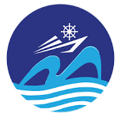

Full-time professional software engineering and web systems development

Working as a full-time software and web developer at Mariners Group corporate office. Architecting, engineering, and deploying production-grade full-stack web platforms with Next.js and Node.js, while building cross-platform mobile applications for both Android and Apple (iOS) using Flutter & Dart. Managing database backends via Supabase and MySQL, and administering cloud infrastructure, server provisioning, and deployment pipelines across AWS and Hostinger VPS.
Active organizational leadership in robotics societies, national olympiads, and global tech programs
Assisted in leading club activities, coordinating robotics events, managing team members, and spearheading organizational initiatives.
Promoted robotics-related programs and engaged students in high-impact technical activities, workshops, and inter-university collaborations.
Promoted ICT and technology initiatives, organized orientation sessions, and encouraged student participation across competitive national programming tracks.
Represented Techfest initiatives and promoted student engagement in international technology competitions, workshops, and exhibitions hosted by IIT Bombay.
Conducted educational activities, mentored students, and actively promoted comprehensive learning programs in science and emerging technologies.